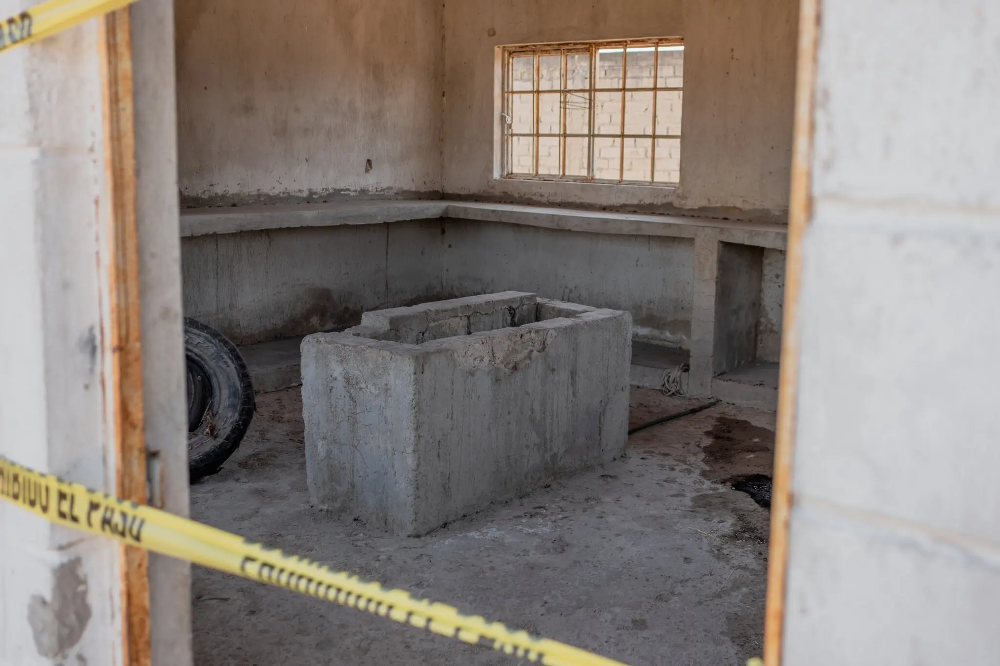
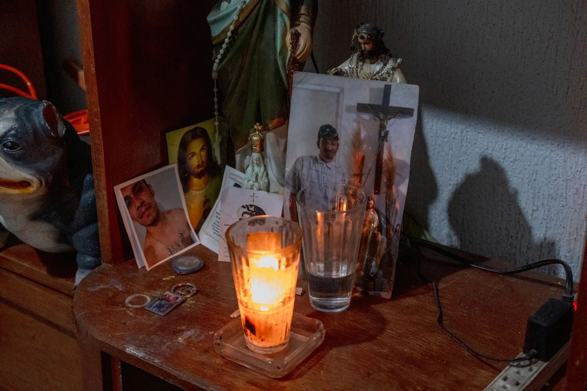
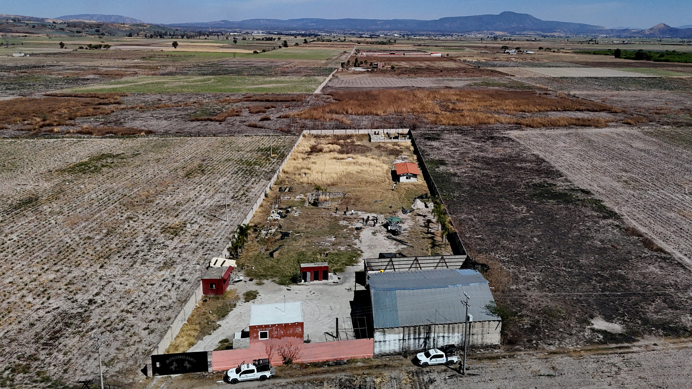

Contexto actual
México enfrenta una crisis humanitaria donde el hallazgo de fosas clandestinas es casi cotidiano.
Desde 2006, se han descubierto más de 5,000 fosas con miles de cuerpos sin identificar. Los colectivos de búsqueda, conformados principalmente por madres, han hecho más que el propio gobierno.
Responsables
El crimen organizado y la colusión de autoridades son factores clave en esta tragedia.
Se estima que muchos cuerpos en las fosas corresponden a víctimas de desaparición forzada, extorsión o trata. La impunidad reina mientras el Estado falla en investigar y sancionar.
Impacto social
Las familias viven un duelo eterno, sin justicia ni verdad.

El dolor de las madres buscadoras se ha convertido en una forma de resistencia. Han convertido palas y picos en símbolos de lucha frente a un gobierno ausente.
Acciones ciudadanas
La sociedad civil ha sido el motor de búsqueda de justicia.
Colectivos de derechos humanos, ONG y periodistas valientes documentan los hallazgos y denuncian la indiferencia del gobierno ante esta grave crisis humanitaria.